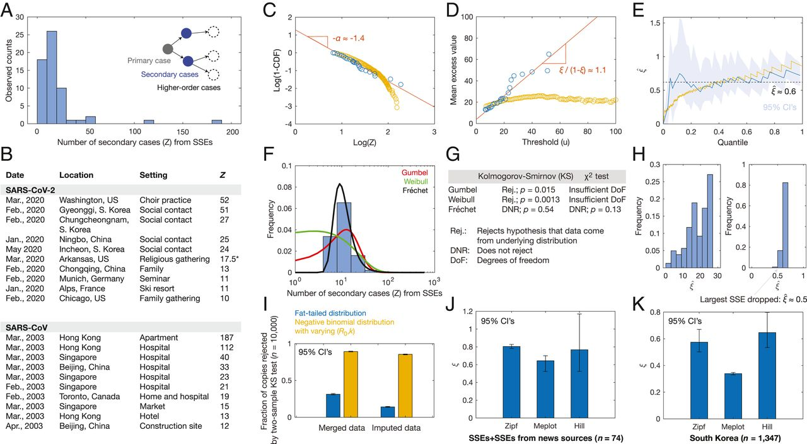

3 Superspreaders
Wong
Superspreading has been recognized as an important phenomenon arising from heterogeneity in individual disease transmission patterns (1). The role of superspreading as a significant source of disease transmission has been appreciated in outbreaks of measles, influenza, rubella, smallpox, Ebola, monkeypox, SARS, and SARS-CoV-2 (1, 2). A basic definition of an nth-percentile superspreading event (SSE) has been proposed to be any infected individual who infects more people than does the nth-percentile of other infected individuals (1). Hence, if the number of secondary cases is randomly distributed, then for large n, SSEs can be viewed as right-tail events. A natural language for understanding the tail events of random distributions is extreme value theory, which has been applied to contexts as diverse as insurance (3) and contagious diseases (4). Here, we apply extreme value theory to empirical data on superspreading in order to gain insight into this critical phenomenon impacting the current COVID-19 pandemic.

Wong (2021) Coronavirus superspreading is fat-tailed (PNAS) (pdf) (pdf SM)